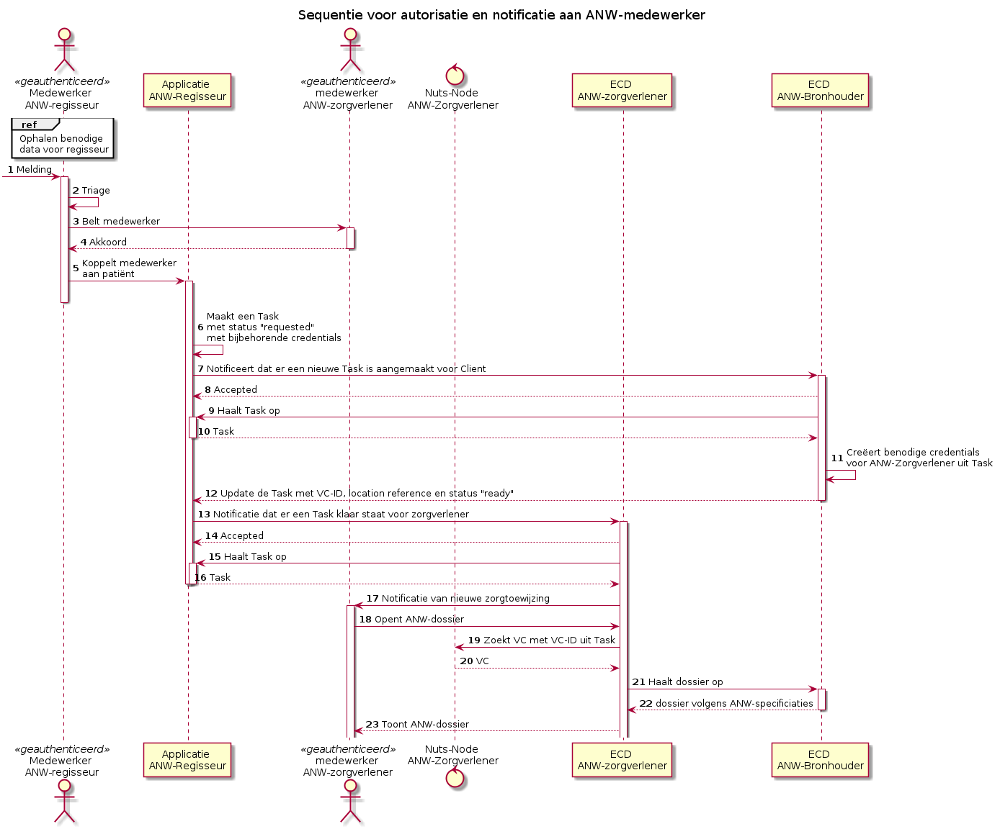
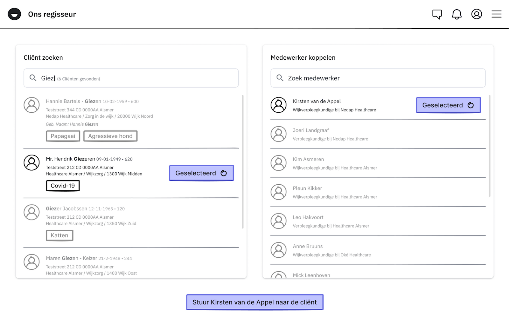

This fragment is not visible to the reader
| Type | Reference | Content |
|---|---|---|
| web | www.nuts.nl |
IG © 2025+ Stichting Nuts
. Package nl.nuts.anw#0.1.0 based on FHIR 4.0.1
. Generated 2025-11-18
Links: Table of Contents | QA Report |
| web | www.nuts.nl | Contact : https://www.nuts.nl |
| web | nictiz.nl | http://nictiz.nl/fhir/StructureDefinition/zib-AllergyIntolerance |
| web | informatiestandaarden.nictiz.nl | In het geval van een fout bij de registratie antwoord het bronsysteem met een OperationOutcome. Zie Fout afhandeling/Handling Errors in de implementatiegids van Nictiz. De operation outcome kan door een systeem gebruikt worden om aan te geven richting de zorgverlener wat er fout is gegaan. In het geval van inhoudelijke fouten die niet zijn toegestaan volgens de Nictiz-profielen geeft de operationoutcome aan welke fout dit betreft. Zodat de zorgverlener de nodige aanpassing kan doen. |
|
ANWSequence_V3.png  |
|
ANW_koppelen.png  |